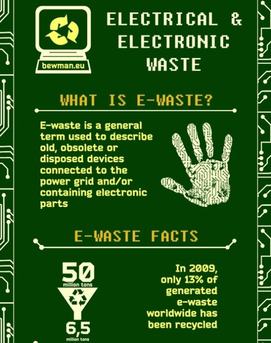
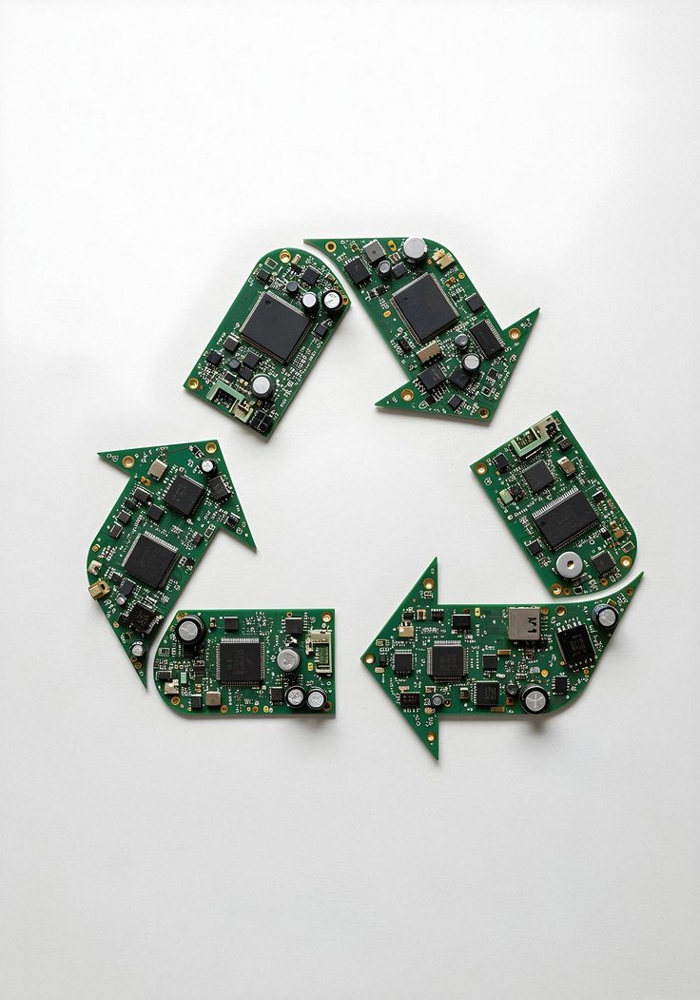
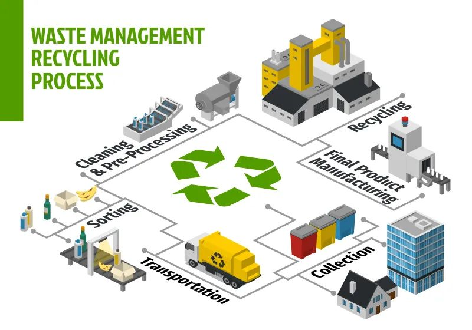

Make responsible disposal easier to access.
We aim to simplify how communities report and collect unwanted electronics by reducing manual coordination and offering a workflow that is easy to follow.
E-Waste System connects the people requesting disposal services with the teams responsible for approving, assigning, and collecting electronic waste in a more structured way.

We aim to simplify how communities report and collect unwanted electronics by reducing manual coordination and offering a workflow that is easy to follow.
Our long-term view is a smarter waste ecosystem where collection becomes more predictable, reporting becomes more useful, and environmental harm is reduced.
Instead of relying on scattered calls, paper notes, or manual follow-up, E-Waste System centralizes requests and status updates in one web experience. The result is better oversight, faster coordination, and a smoother experience for users and staff.

Users submit requests, admins validate and assign them, and collectors close the loop with collection updates. That structure helps the service remain transparent and manageable as demand grows.
